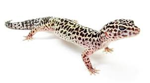
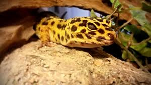
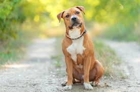
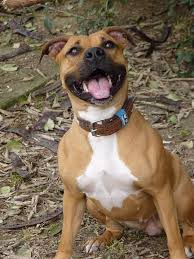
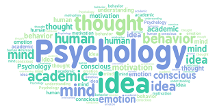
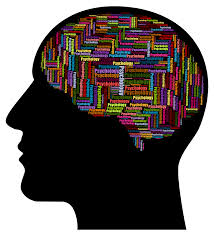

Sports
I was born on August 28th 2008. At a young age I started to play Soccer, which i didn't like as I sat on the field and picked flowers instead of guarding the goal. Then I started baseball. Not one of my favorite sports either. When I started football, I liked it more than the other sports since my dad was the coach of the team and I was more involved with the sport. I played football for 4 years before I stopped playing because I lost interest. I dabbled in track in middle school and didn't get too involved since I hated running. In 9th grade, my mom made me join cross country since I was starting highschool and she wanted me to do more than just schoolwork and it was an opportunity to make new friends. I did make friends that I'm still friends with now and still talk to. When cross country ended they convinced me to join the wrestling team. Little did I know that this sport would change my life, pushing me to my limits, teaching me disipline and encouraging me to never give up no matter how hard things get. Since freshman year, I've done wrestling every year.
Table of my weights and heights since freshman year
| Freshman | Sophomore | Junior |
|---|---|---|
| 120 lbs | 132 lbs | 144 lbs |
| 5'7 | 5'8 | 5'9 |


My Animals
Gecko
Every since I was a kid I've had a family pet. Either a dog or a dog and a cat. At one point I begged my mom to get us a family bird because I thought it'd be cool to have a bird perched on my shoulder while i did stuff around the house like a pirate. At one point I thought I'd convinced her, although she was not keen on changing her mind anytime soon. We both compromised to get another pet that was less noisy and less maintenance. We went to the pet store and get a leopard gecko instead! I saved up around $450 for an enclosure, food, and objects like rocks and logs to put in his tank. He is still alive to this day and he is 3 years old. Here is a link to the Wikipedia Page!
 
Dog
I also have a Staffordshire Terrier that i got 2023 Christmas. Her name is Hazel and she is only one year old so far. The difference between her and the other dogs I've had is that she's my dog and not a family dog. I take care of her and feed her and give her baths. When she was a puppy, she ran away for a few hours. I ended up finding her at a car shot down the street from me that found her wandering around. If it wasn't for that car shop, I don't think I would've found Hazel. She is currently at home and shes a lot bigger now and I can't hold her or have her on my lap like I could before. Here is a link to the Wikipedia Page!
 
How hard each animal I've had's maintenance is
- Bird
- Dog
- Cat
- Gecko
Career choices
For a while I wanted to be an actor. Seeing all of these cool moments on my tv with action heros and explosions and fighting bad guys, I always wanted to know what it would be like to actually be on the set of a movie and meet famous actors that I love. In middle school, I joined the theater club. After a while, I found out that I didn't like acting as much as I thought I would. After a while, I decided I wanted to maybe get into trades, like becoming an electrician. My grandpa built his own house, electrical and all. Seeing that inspired me to get into that since I thought it'd be a good thing to know and I thought I'd make a lot of money. After looking into it a little bit more, I realized trades also probably weren't for me either. After realizing that electritians only make around $60,000 a year and risk getting hurt by electricity, I didn't think I wanted to do it anymore. In semester 1 of this school year, I put psychology on my list of classes this semester thinking it'd be a fun class to take and also pretty easy. I took some interest in it and after talking to some of my school counselors, I think I might be interested In a career in psychology. Knowing how and why humans act the way they do and also being able to help other is something that I want to learn and do. Also, they make pretty good money.  